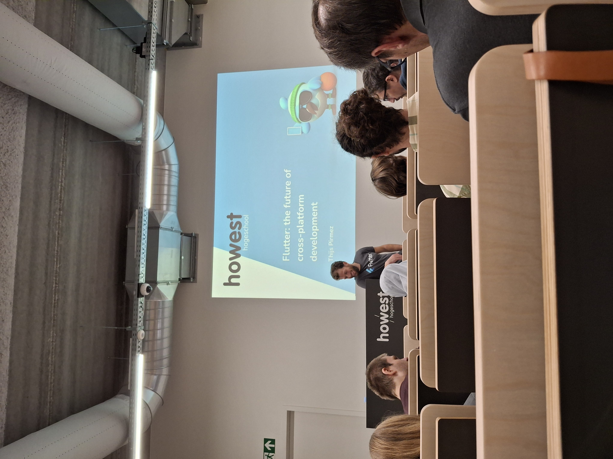
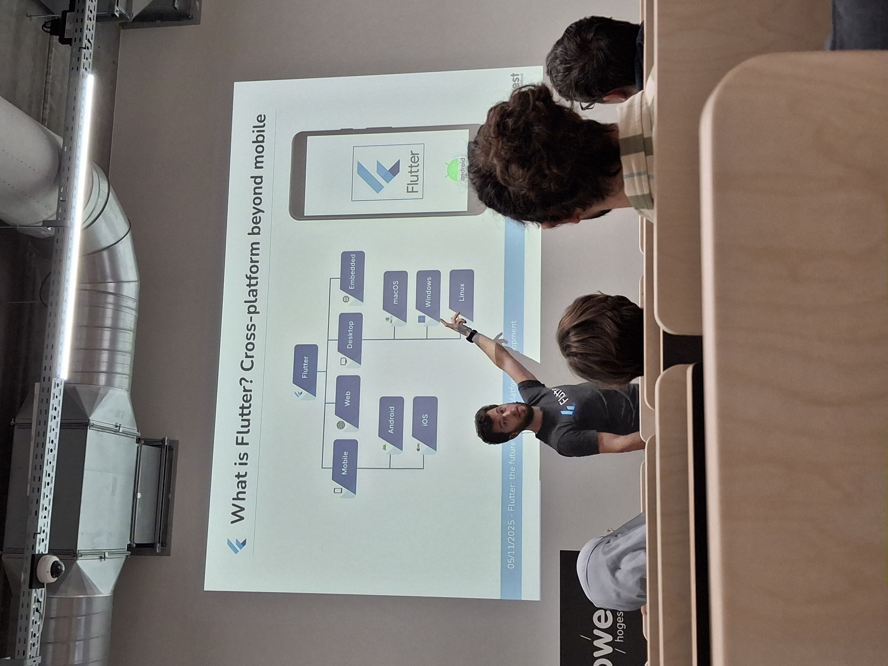

Cross-Platform App Development


This was a one-time, 90-minute session aimed at students and software developers interested in mobile or cross-platform app development. The session focused on Flutter, Google’s UI toolkit that allows you to build apps for Android, iOS, the web, and desktop using a single codebase. Going in, I had no prior experience with Flutter and didn’t really know much about it.
The speaker was Thijs Pirmez, a self-taught programmer with a remarkably broad background. He works as an all-around AI researcher and is both an Android and iOS developer. In addition, he has experience with native Android development, front-end web development, and actively works with Flutter frameworks for app development. This allowed him not only to explain the basics of Flutter but also to compare it with other technologies and share his own practical experiences.
He is also part of Howest Cyber3Lab.
During the event, I mainly learned what Flutter exactly is and how you can use it to build modern, cross-platform apps. The session provided a clear picture of the advantages and disadvantages of Flutter (one advantage, for example, is a single shared codebase and a fast development cycle). For someone with no prior experience with Flutter, the content was easy to follow, yet technical enough to be relevant to developers.
Personally, I learned a lot. I had heard of the concept before, but now I have a much better idea of what you can do with Flutter. It’s something I might want to focus on more in the future.
The event was very well organized. I would definitely go again and would also recommend it to other students interested in this field.